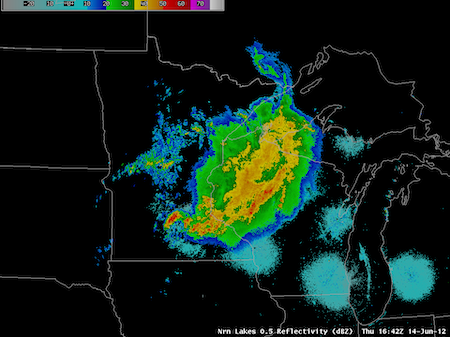
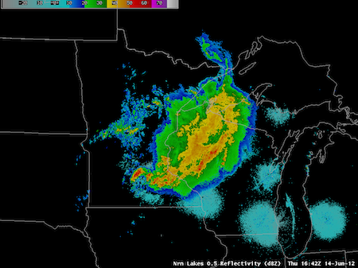

| Item | Parameter | Yes | No |
|---|---|---|---|
| 1 | SRH 0-6 km > 15-20 m/s | ||
| 2 | CIN is low on a widespread region? | ||
| 3 | Is there a linear boundary (thermal boundary - cold front)? | ||
| 4 | Is there convergence along the boundary? | ||
| 5 | Low LCLs? | 6 | MUCAPE > 2500 J/kg | 7 | Inverted V Skew-T profile |
| 8 | Strong mid-upper level winds | // | ⟂ |
| 9 | SRH orientation respectively to the boundary | ||
| 10 | Mid level flow 850-300 hPa orientation to boundary |

 

| Item | Parameter | Yes | No |
|---|---|---|---|
| 1 | Inverted V Skew T profile | ||
| 2 | High PW > 35-40 mm | ||
| 3 | MUCAPE >> 1000 J/kg | ||
| 4 | Winds at 700 hPa > 20 m/s and perpendicular to the convective system |
| Item | Parameter | Yes | No |
|---|---|---|---|
| 1 | Deep trough from the NW and Omega blocking anticyclone over the E | ||
| 2 | Low level Jet advecting large moisture contents | ||
| 3 | Probability of convective precipitations >10% (TP poor-man ensenble)? | ||
| Skew-T features | |||
| 1 | Quasi Moist adiabatic profile | ||
| 2 | Skinny CAPE profile | ||
| 3 | High PW >30-35 mm | ||
| 4 | Low LCLs | ||
| 5 | Warm mid level temperatures (high 0 isotherm) | ||
| 6 | Weak mid-level flow or // to the boundary | ||
| Persistence | |||
| 1 | Upscale growth suggested by HR models? | ||
| 2 | Backbuilding (low level stream crosses the boundary within a weak DLS environment) | ||
| 3 | Low level Jet crossing the boundary | ||
| 4 | The trigger line is stationary (stationary convergence or orography) |
| Item | Parameter | Yes | No | 1 | LCLs < 1000 m and low LFCs |
|---|---|---|---|
| 2 | BSRH 0-1 km > 8-10 m/s | ||
| 3 | SRH 0-1km > 100-150 m2/s2 | ||
| 4 | SBCAPE << MUCAPE and/or |SBCIN|>>|MUCIN| |
| Item | Parameter | Yes | No |
|---|---|---|---|
| 1 | MUCAPE>800 J/kg | ||
| 2 | MUCAPE>1200 J/kg | ||
| 3 | Low freezing level respectively to surface | ||
| 4 | High moisture contents in the lower levels | ||
| 5 | BSRH 0-6 km < 10 m/s | ||
| 6 | BSRH 0-6 km: 10-15 m/s | ||
| 7 | BSRH 0-6 km >> 15 m/s |